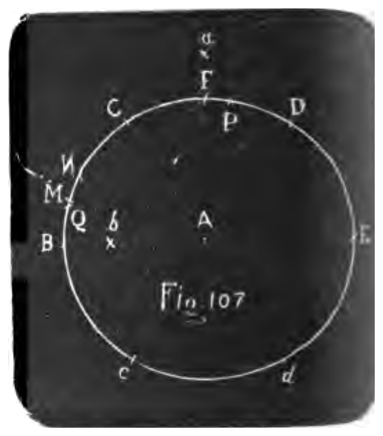

§§ 273–280: Sphere Cubature & Cube Duplication (∛2 through ∛8)¶
f. 0171 · p. 146273. Problem. Given (Fig. 105) the radius \(AB\) of a sphere, to find
f. 0172 · p. 147the side of a cube approximately equal in volume to the same.
Sol. With radius \(AB\), center \(A\), describe the circumference \(BGCDPEd\); make \(AB = BC = CD = DE = Ed\). With center \(B\), radius \(BD\), mark the arc \(aDNd\). With the same radius, and center \(E\), cut this arc at \(a\). Make \(AB = aG = dN\). Then \(CN = CP\). \(PG\) will be the side sought.
Demonstration. Since (§ 272) \(CN\) will be the chord of \(92^\circ 26' \frac{804}{2013}\). Then \(GC\) will be \(= 15^\circ\) (§ 32). Hence \(PG = 107^\circ 26' \frac{804}{2013}\), the chord of which arc is found to be equal to \(1.6122696\), supposing \(AB = 1\). Now in the same supposition, and supposing the ratio of the circumference to the diameter \(= \pi\), we have the volume of the sphere \(= \frac{4}{3}\pi\), and its logarithm \(= \log 4 + \log \pi - \log 3 = 0.6220886\), whose third \(0.2073628\) is found to be the logarithm of \(1.611991\). Wherefore the error committed does not reach \(0.0003\).

274. Problem. Given (Fig. 106) the side \(AB\) of a cube, to find the radius of a sphere that is approximately equal to it in volume.
Sol. With radius \(AB\), center \(A\), describe the circumference \(BLCMFDE\). Make \(AB = BC = CD = DE\). Then \(BD = Ba = Ea\); then \(Aa = BF\); then \(Fa = FM\), \(FA = FL\). \(LM\) will be the radius sought.

Demonstration. The arc \(FL\) will be \(= 60^\circ\) (15, Book IV). Moreover (putting \(AB = 1\)), we have \(aF = Aa - AF = \sqrt{2} - 1\) (§ 27) \(= 0.4142136\), which is found
f. 0173 · p. 148to be the chord of \(23^\circ 54' \frac{976}{2846}\). Hence the arc \(LM\) will be \(= 36^\circ 5' \frac{1870}{2846}\), which has for its chord \(0.6195986\). Now since, as is known, the volume of a sphere of radius \(R\) is expressed by the formula \(\frac{4}{3}\pi R^3\), setting \(\frac{4}{3}\pi R^3 = 1\), which is the volume of the given cube, we shall have \(\log R = \frac{\log 3 - \log 4 - \log \pi}{3} = -1 + 0.7926371 = \log 0.6203504\). The error committed in defect therefore does not reach \(0.0008\).
275. All these approximations in the rectification, quadrature, and cubature of the circumference, the circle, and the sphere, and in the inverse Problems, leaving no errors of one-thousandth of the radius, are judged to be sufficient for practice. Whoever should wish for more accurate ones will have nothing else to do than to find by calculation of what arc in degrees and minutes that linear quantity which he seeks is the chord; then to obtain this chord from the circle after dividing it into those degrees and minutes that are required, employing the methods demonstrated above (§§ 236 and 244).
276. Problem. To duplicate the cube by approximation.
Sol. I. Let (Fig. 107) \(AB\) be the side of the cube which it is desired to duplicate. With center \(A\) and radius \(AB\), describe the circumference \(BQMNCFPDEdc\), and make in it \(AB = BC = CD = DE\); then \(BD = Ba = Ea\); then \(Aa = BF\); then \(FA = FN\); \(aN\) will be approximately the side of the doubled cube.
Demonstration. The arc \(BN\) will be one twelfth of the circumference (§ 31) \(= 30^\circ\). If this arc \(BN = A\) is introduced into equation (1), the arc \(A'\), of which \(aN\) is the chord, will turn out \(= 78^\circ 2' \frac{2358}{2846}\). Thus we have (putting \(AB = 1\)) \(aN = 2\sin 39^\circ 1' \frac{1179}{2846} = 1.2592800\). Then we have \(\sqrt[3]{2} = 1.2599209\). Thus it does not commit a defect of \(0.0007\).


Sol. II. If greater exactness were desired, having made the construction of Solution I, and having also made \(AB = Ed = dc\); then \(Aa = BF = Db = db\); then \(aN = cM = MP\); then \(Fb = FQ\); \(PQ\) will be the side sought with much greater approximation.
Demonstration. Since by the demonstration of Solution I the arc \(cM = 78^\circ 2' \frac{2358}{2846} = MP\), the arc \(cMP\) will be \(= 146^\circ 5' \frac{1870}{2846}\). Then having subtracted the arc \(FQ = 72^\circ\) (§ 40) from the arc \(FBc = 150^\circ\) (§§ 27, 29), there will remain the arc \(cQ = 78^\circ\), which subtracted from the arc \(cMP\) will leave the arc \(QP = 78^\circ 5' \frac{1870}{2846}\), the chord of which is found to be \(= 1.2599190\). Therefore there will be committed only a defect of \(0.0000019\), that is, barely two millionths of the radius.
277. Problem. To triplicate, quadruplicate, etc., the cube up to octuplication (Fig. 108).
Sol. Let \(AB\) be the side of the given cube. With radius \(AB\) and center \(A\), describe the circumference \(B\omega G\mu C\varepsilon\nu FLDOEdc\). Make in it \(AB = BC = CD = DE = Ed = dc\). With the same radius \(AB\), and with centers \(B\), \(c\), \(d\), \(E\), \(D\), describe the arcs \(A\pi c\), \(Aqd\), \(c\beta A\delta E\), \(Apd\), \(A\tau E\). With radius \(BD\), center \(B\), describe the arc \(d\tau\delta Da\); with the same radius, and center \(E\), cut this arc at \(a\). With the same radius, and with centers \(C\) and \(D\), describe the arcs \(cpqE\), \(B\beta\pi d\). Make \(Aa = BF\); then \(AB = FO = aG = GL\); then \(EL = a\omega\); then \(\pi\tau = B\varepsilon\); then \(p\delta = B\mu\), \(q\tau = \mu\nu\). We shall have
\(aO\) |
side of the doubled cube (§ 276) |
\(C\delta\) |
side of the tripled cube |
\(OG\) |
side of the quadrupled cube |
\(O\omega\) |
side of the quintupled cube |
\(c\varepsilon\) |
side of the sextupled cube |
\(c\nu\) |
side of the septupled cube |
\(BE\) |
side of the octupled cube. |

Demonstration. Putting \(AB = 1\), we shall have (§ 272) \(C\delta = \sqrt{4 - \frac{1}{3}\sqrt{33}} = 1.4440033\). Moreover we have \(\sqrt[3]{3} = 1.4422493\). The excess therefore does not reach \(0.002\).
Since the arc \(OFG = 105^\circ\) (§ 29, 30), its chord will be \(OG = 2\sin 52^\circ 30' = 1.5867066\). Moreover we have \(\sqrt[3]{4} = 1.5874007\). The defect therefore is about \(0.0007\).
Next, the arc \(EL\) will be \(= \frac{5}{24}\) of the circumference (§ 32) \(= 75^\circ\). If in equation (4) we introduce \(A' = 75^\circ\), the arc \(A = B\omega\) results \(= 32^\circ 27' \frac{27}{2454}\). Hence \(F\omega\) will be \(= 57^\circ 32' \frac{2427}{2454}\). Then since \(FO = 60^\circ\) (15, Book IV), the arc \(OF\omega\) will be \(= 117^\circ 32' \frac{2427}{2454}\), which has for its chord \(1.7102744\). Moreover we have \(\sqrt[3]{5} = 1.7099757\). The excess therefore does not reach \(0.0003\).
Since \(BD = B\tau = D\pi = \sqrt{3}\) and \(D\tau = B\pi = 1\), we shall have (§ 23) \(\pi\tau \cdot BD = (BD)^2 - (B\pi)^2\); that is, \(\pi\tau \cdot \sqrt{3} = 2\); hence \(\pi\tau = \frac{2}{\sqrt{3}} = 1.1547005\), which is found to be the chord of \(70^\circ 31' \frac{1725}{2375} = B\varepsilon\). Therefore the arc \(cB\varepsilon\) will be \(= 130^\circ 31' \frac{1725}{2375}\), which has for its chord \(1.8164964\).
Moreover we have \(\sqrt[3]{6} = 1.8171204\). Therefore a defect less than \(0.0007\) is committed.
The two triangles \(C\delta p\), \(Bp\delta\), having their sides respectively equal, will be equal (8, 26 Book I); and being on the same base \(p\delta\), they will lie between the same parallels \(p\delta\), \(BC\) (39, Book I). Therefore the angle \(BC\delta\) will be \(= B\delta p\) (27, Book I). Hence \(\cos CB\delta = \frac{1}{6}\sqrt{11}\) (§ 272) \(= \cos B\delta p\). Moreover we have from Trigonometry \((Bp)^2 = (B\delta)^2 + (p\delta)^2 - 2 B\delta \cdot p\delta \cos B\delta p\); and since \(Bp = C\delta\), because it is determined by the same construction, we shall have \(4 - \frac{1}{3}\sqrt{33} = 3 + (p\delta)^2 - 2 p\delta \cdot \sqrt{3} \cdot \frac{1}{6}\sqrt{11}\); hence \(1 - \frac{1}{3}\sqrt{33} = (p\delta)^2 - p\delta \cdot \frac{1}{3}\sqrt{33}\). Adding to both sides of the equation the square of \(\frac{1}{6}\sqrt{33}\), there will result \(\left(1 - \frac{1}{6}\sqrt{33}\right)^2 = \left(p\delta - \frac{1}{6}\sqrt{33}\right)^2\); hence \(p\delta - \frac{1}{6}\sqrt{33} = \pm \left(1 - \frac{1}{6}\sqrt{33}\right)\). Moreover we have (§ 23) \(p\delta \cdot dE = (dE)^2 - (pd)^2\); that is, \(p\delta = 1 - (pd)^2\), and hence less than unity; therefore we shall determine \(p\delta = \frac{1}{3}\sqrt{33} - 1 = 0.9148541\), which is found to be the chord of \(54^\circ 26' \frac{1408}{2586}\). Moreover we have \(q\tau = LM\) of Fig. 103 \(=\) the chord of the arc
f. 0176 · p. 151\(31^\circ 28' \frac{2518}{2799}\) (§ 270). Therefore the arc \(cB\mu\nu = 60^\circ + 54^\circ 26' \frac{1408}{2588} + 31^\circ 28' \frac{2513}{2799} = 145^\circ 55' \frac{1607}{1022}\), of which arc the chord is found to be \(c\nu = 1.9122214\). Moreover we have \(\sqrt[3]{7} = 1.9129309\). Therefore a defect less than \(0.000702\) is committed.
Moreover we have \(BE = 2 = \sqrt[3]{8}\). Therefore etc.
278. Problem. To subduplicate the cube approximately.
Sol. Let \(AB\) be the side of the given cube (Fig. 108). With center \(A\) and radius \(AB\), describe the circumference \(BCDEd\), and make \(AB = BC = CD = DE = Ed\); then with radius \(BD\), center \(B\), mark the arc \(D\delta d\). With center \(d\), radius \(dA\), mark the arc \(A\delta E\). \(D\delta\) will be the side sought.
Demonstration. The \(D\delta\) of this Figure is determined like the \(dL\) of Fig. 103. Therefore (§ 270) \(D\delta = 0.7922869\). Now we have \(\sqrt[3]{\frac{1}{2}} = 0.7937039\). Therefore a defect less than \(0.002\) is committed.
279. We have not wished to omit the Solutions of these last two Problems (§§ 277, 278), although some results contain errors of one or two thousandths, and the others of a few ten-thousandths; because in many cases such errors will prove negligible, and on the other hand the Solutions seemed to us simple. Much more exact values could be obtained, whenever it were necessary not only for forming cubes in the ratios expressed above, but also in others, if one sought of what arc expressed in degrees, minutes, and parts of minutes the cube roots, or the halves, thirds, etc., of the cube roots required for the construction of the cube sought are the chords, and then obtained these chords from the circle divided precisely into degrees, minutes, etc. (§§ 244, 245, etc.), and then employed these chords, or their multiples (§§ 64, 65), in the same construction of the cube.
280. And here let there now be an end to this Geometria del Compasso, which if it shall not displease Geometers, and if it can in any way serve Artists, Draftsmen, and especially Dividers of circles for Geographical and Astronomical uses, I shall find myself sufficiently rewarded for the long tedium consumed in composing it.